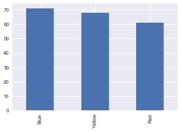
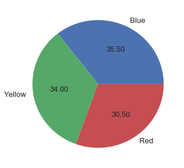
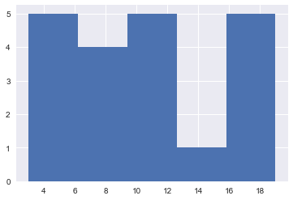
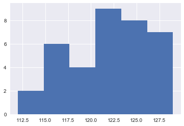
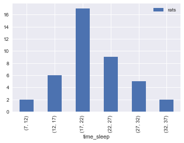
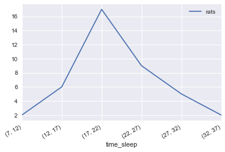

Or the arithimetic mean, is the most frequently used measure of central tendency, the mean is the sum of all values / number of values.
import numpy as np
np.mean([1, 3, 6, 10, 20, 50])
# 15.0Is the value of the middle term in a dataset that has been ranked in increasing order. If the dataset is odd the median is given by the value of the middle term, if even the median is given by the average of the values of the two middle terms.
print(np.median([1, 2, 4, 5, 7, 10, 20]))
print(np.median([1, 2, 4, 5, 6, 7, 10, 20]))
# 5.0
# 5.5Is the value that occours with the highest frequency in the dataset.
from scipy import stats
stats.mode([1, 2, 2, 2, 3, 3, 4, 5, 6])
# ModeResult(mode=array([2]), count=array([3]))The standard deviation is the most-used measure of dispersion. The value of the standard deviation tells how closely the values of a data set are clustered around the mean. The standard deviation is obtained by taking the positive square root of the variance:
import math
import pandas as pd
df = pd.DataFrame({
'values': [6, 7, 7.8, 8]
})
mean = df['values'].mean()
df['deviation'] = df['values'] - mean
df['dev**2'] = round(df['deviation'] ** 2, 2)
# values deviation dev**2
# 0 6.0 -1.2 1.44
# 1 7.0 -0.2 0.04
# 2 7.8 0.6 0.36
# 3 8.0 0.8 0.64
# population
len_pop, len_sam = len(df), len(df)-1
variance = round(df['dev**2'].sum() / len_pop, 2)
standard_dev = round(math.sqrt(variance), 2)
# Variance pop: 0.62
# StdDev pop: 0.79
# sample
variance = round(df['dev**2'].sum() / len_sam, 2)
standard_dev = round(math.sqrt(variance), 2)
# Variance sam: 0.83
# StdDev sam: 0.91
# Using default describe pandas method
print(df['values'].describe())
# count 4.000000
# mean 7.200000
# std 0.909212
# min 6.000000
# 25% 6.750000
# 50% 7.400000
# 75% 7.850000
# max 8.000000
# Name: values, dtype: float64For the mean on grouped data calculate the range mean of the class, the higher + lower / 2, and multiply it by the frequency.
df = pd.DataFrame({
'l': [15.9, 18.7, 21.5, 24.3, 27.1, 29.9, 32.7],
'h': [18.7, 21.5, 24.3, 27.1, 29.9, 32.7, 35.5],
'months': [12, 8, 12, 5, 3, 6, 10]
})
df['mean_r'] = (df['h'] + df['l']) / 2
df['mean_f'] = df['mean_r'] * df['months']
total_freq = df['months'].sum()
mean = df['mean_f'].sum() / total_freq
# Mean of grouped data: 24.75For a continuous grouped data we have again to calculate the mean of the class and multiply for the frequency. Let's get the same example below to calculate the variance and standard deviation:
df['variance'] = ((df['mean_r'] - mean) ** 2) * df['months']
h l months mean_r mean_f variance
0 18.7 15.9 12 17.3 207.6 666.0300
1 21.5 18.7 8 20.1 160.8 172.9800
2 24.3 21.5 12 22.9 274.8 41.0700
3 27.1 24.3 5 25.7 128.5 4.5125
4 29.9 27.1 3 28.5 85.5 42.1875
5 32.7 29.9 6 31.3 187.8 257.4150
6 35.5 32.7 10 34.1 341.0 874.2250
variance = round(df['variance'].sum() / total_freq, 4)
# Variance: 36.7575
# StdDev: 6.06Quartiles and interquartile range, the measure are first, second and third quartile (Q1, Q2, Q3). Q2 is the median, the interquartile = Q3 - Q1.
data = [7, 8, 9, 10, 11, 12, 13, 13, 14, 17, 17, 45]
def find_quartile(data):
Q2 = np.median(data)
Q3 = np.median(data[len(data)//2:])
Q1 = np.median(data[:len(data)//2])
return Q1, Q2, Q3
print(find_quartile(data))
# (9.5, 12.5, 15.5)
print(pd.Series(data).describe())
# count 12.000000
# mean 14.666667
# std 10.066446
# min 7.000000
# 25% 9.750000
# 50% 12.500000
# 75% 14.750000
# max 45.000000
# dtype: float64
# 1 - A company studied the use of alcohol by his
# employers this is the frequency by days, calculate the mean:
df = pd.DataFrame({
'days': [0, 1, 2, 3, 4, 5, 6, 7],
'emp_num': [10, 16, 14, 8, 5, 4, 4, 3]
})
df['xi.fi'] = df['days'] * df['emp_num']
print(round(df['xi.fi'].sum() / df['emp_num'].sum(), 2))
Mean: 2.39
# 2 - The data above shows up the families income per year in thousands.
# calculate the variance and standard deviation.
df = pd.DataFrame({
'l': [112, 115, 118, 121, 124, 127],
'h': [115, 118, 121, 124, 127, 130],
'freq': [2, 6, 4, 9, 8, 7]
})
df['mean_r'] = (df['h'] + df['l']) / 2
df['mean_f'] = df['mean_r'] * df['freq']
total_freq = df['freq'].sum()
mean = df['mean_f'].sum() / total_freq
df['deviance'] = ((df['mean_r'] - mean) ** 2) * df['freq']
variance = round(df['deviance'].sum() / (total_freq - 1), 4)
Variance: 21.0857
StdDev: 4.59Statistics is a group of methods to collect, analyze, present and interpret data and to make decisions. Decisions made by using stats methods are called educated guesses, decisions made without it are called pure guesses. Statistics is divided in two kind of studies, the first is descriptive, where are described methods for organizing, displaying and describing data by using tables, graphs and summary measures. The seconds kind is the inferencial stats consist of methods that use sample results to help make desicisions or predictions about the population.
About the basic terms we have the element or member, is a specific subject or object about which information is collected, and the variable, the characteristic under study that assumes different values for different elements. With this in mind we can assume that in the following table:
| Sex | Interviewd# | Sentiment |
|------|-------------|-----------|
| M | 295 | good |
| F | 345 | bad |Sex is the element/member and the interviwed is our variable, being the scalar numbers the measurements or observations.
Variables can be divided in Quantitatives and Qualitatives variables.
Whose a value are countable we call discrete, in other words a discrete variable can assume only certain values with no intermediate value. A finite number of values for example, the number of people in a sector, quantity of items on a store).
import numpy as np
np.linspace(1, 20, 10, dtype=int)
array([ 1, 3, 5, 7, 9, 11, 13, 15, 17, 20])A variable that can assume any numerical value over a certain interval or intervals, it can exist in an infinite set of values. For example: The weight, height, time or temperature. E.g the time taken may be 42.6 min, 50 min or 42.34 min. It can't be counted in a discrete fashion.
It is a varaible that cannot assume a numerical value but can be classified into two or more nonnumeric categories, for example:
categories = ['Blue', 'Red', 'Yellow']
np.random.choice(categories, 6)
array(['Blue', 'Yellow', 'Red', 'Yellow', 'Yellow', 'Red'],
dtype='<U6')Other important concept we need to make clear (since it have impact on methods and Python functions) is the cross-sections and time-series data. The cross-section data is collected on different elements at the same point in time or for the same period of time:
from IPython.display import display
import pandas as pd
from pandas import DataFrame
# Cross-section data
DataFrame({
'Company': ['X','y','Z','Q'],
'Values in one year': [1,4,57,32]
})
Company Values in one year
0 X 1
1 y 4
2 Z 57
3 Q 32
# Timeseries data
DataFrame({
'BS Year': pd.date_range('2017-06-23', periods=4, freq='A'),
'Values': [1,4,57,32]
})
BS Year Values
0 2017-12-31 1
1 2018-12-31 4
2 2019-12-31 57
3 2020-12-31 32Now let's see the frequency distribution for a qualitative variables table:
categories = ['Blue', 'Red', 'Yellow']
# Create a Pandas series to count occurences
measures = pd.Series(
np.random.choice(categories, 200)
)
# Frequency distribution
frequency_dist = measures.value_counts()
Frequency distribution
Blue 71
Yellow 68
Red 61
dtype: int64
# Total frequency (sum)
total_freq = frequency_dist.sum()
200The relative frequency is obtained by dividing the frequency of that category by the sum of all frequencies, showing up the fractional part or porportion of the total frequency belongs to the corresponding category.
relative_freq = freq / sum(freq)The percentge of the category is obtained by multiplying the relative frequency on that category by 100:
percentage = (relative_freq) * 100How to calculate it on a new DataFrame using the last frequency distribution data:
distribution = pd.DataFrame({'freq_dist': frequency_dist})
distribution['relative_freq'] = distribution['freq_dist'] / total_freq
distribution['percentage'] = distribution['relative_freq'] * 100
freq_dist relative_freq percentage
Blue 71 3.55 355.0
Yellow 68 3.40 340.0
Red 61 3.05 305.0Here I am going to present two kind of simple graphing with categorical and usage of percentage/relative frequency, bar graphs and pie chart:
%matplotlib inline
import seaborn
distribution['freq_dist'].plot(kind='bar')
distribution['percentage'].plot.pie(
figsize=(5,5), autopct="%.2f", fontsize=13
).axis('off')
To build a table of frequency distribution with quantitative data the prefered method is the table with intervals. An interval that includes all the values that fall within two numbers - the lower and upper limits - is called a class. Classes should be not overlapped. In the case the frequency of a class represents the number o values in the data set that fall in that class, each class has a lower limit and an upper limit.
import math
sample = sorted([np.random.randint(20) for _ in range(20)])
print(sample[:10])
# [3, 4, 4, 5, 5, 8, 8, 9, 9, 10]
lower, highest = min(sample), max(sample)
total_amp = highest - lower
# Lower: 3
# Highest: 19
num_classes = int(math.ceil(math.sqrt(len(sample))))
# Number of classes: 5
aprox_width = int(math.ceil(total_amp / num_classes))
# Aproxim Class Width: 4
# Length of sample: 20
def create_classes(lower, num_class, width, sample):
df = DataFrame({'value': sample})
classes = []
for n in range(num_class):
lower_lim = n * width
upper_lim = lower_lim + width
klass = (lower_lim, upper_lim)
classes.append(klass)
def set_classes(x):
for c in classes:
l, h = c
if x > l and x <= h:
return c
if x == 0 and l == 0:
return c
df['class'] = df['value'].apply(set_classes)
return df.groupby('class').size()
def create_classes_df(sample, num_classes):
series = pd.Series(sample)
ser_ret = pd.qcut(series, num_classes).value_counts()
ser_ret.sort_index(inplace=True)
return ser_ret
# Creating by hand:
print(create_classes(lower, num_classes, aprox_width, sample))
# class
# (0, 4) 3
# (4, 8) 4
# (8, 12) 7
# (12, 16) 2
# (16, 20) 4
# dtype: int64
# Creating automatic with Pandas:
freq_class = create_classes_df(sample, num_classes)
total_freq = freq_class.sum()
freq_data = DataFrame({"freq_class": freq_class})
# freq_class
# [3, 5] 5
# (5, 9] 4
# (9, 10] 5
# (10, 16.2] 2
# (16.2, 19] 4The cumulative frequency gives the overview of cumulative values until get to that point, the relative frequency gets the relative frequency for a measure per the entire number of observation and the percentage is the relative frequency in percent format:
freq_data["relative_freq"] = freq_class/total_freq
freq_data["prec_freq"] = freq_class/total_freq * 100
freq_data["cum"] = freq_data['relative_freq'].cumsum()
# freq_class relative_freq prec_freq cum
#[3, 5] 5 0.25 25.0 0.25
#(5, 9] 4 0.20 20.0 0.45
#(9, 10] 5 0.25 25.0 0.70
#(10, 16.2] 2 0.10 10.0 0.80
#(16.2, 19] 4 0.20 20.0 1.00The more common visualization for quantitative data on a frequency classed distribution is the histogram:
import matplotlib.pyplot as plt
df = create_classes_df(sample, num_classes)
out = plt.hist(sample, bins=num_classes)
# 1 - A recent report had 6 motives of tension (stress). The research result is in the table above. Construct the frequency table:
table1 = ['MP', 'MC', 'DO', 'DG', 'MF', 'DM', 'MF',
'MP', 'DG', 'MC', 'MC', 'MF', 'MF', 'MC',
'MC', 'MF', 'MC', 'MP', 'DO', 'MP', 'MP',
'MP', 'DM', 'MP', 'DO', 'MP', 'DM', 'DG',
'DM', 'MC', 'MF', 'MF', 'MF', 'MF', 'MF',
'DO', 'MP', 'DG', 'MP', 'DG', 'MF', 'MC',
'MF', 'MP', 'DO', 'DO', 'DO', 'DM', 'MF',
'MC', 'MF', 'DM', 'MC', 'MC', 'DG', 'DO',
'MF', 'DG', 'MF', 'MC']
pd.DataFrame({'values': table1}).groupby('values').size()
values
DG 7
DM 6
DO 8
MC 12
MF 16
MP 11
dtype: int64
# 2 - The following data presents the profit from families on a specific neighborhood, construct the frequency distribution, being k = 6, calculating the size of interval ceil the number: 3.84 ~= 4.
data = [115,121,117,124,122,116,123,118,
123,119,123,126,128,122,112,125,
124,126,125,121,129,127,128,129,
113,115,116,124,119,118,126,129,
116,127,123,121]
v, bins, _ = plt.hist(data, 6)
# values
# [ 2. 6. 4. 9. 8. 7.]
# bins
# [ 112. 114.83 117.66
# 120.5 123.33 126.16
# 129. ]
# 3 - Number of accidents by month grouping is in the following table, find the cumulative frequency, relative frequency and percentage:
df = DataFrame({
'accidents': [3, 4, 5, 6, 7, 8],
'months': [4, 5, 9, 7, 5, 6]
})
df['cum'] = df['months'].cumsum()
df['fr'] = round(df['months'] / df['months'].sum(), 4)
df['perc'] = round(df['fr'] * 100, 2)
accidents months cum fr perc
0 3 4 4 0.1111 11.11
1 4 5 9 0.1389 13.89
2 5 9 18 0.2500 25.00
3 6 7 25 0.1944 19.44
4 7 5 30 0.1389 13.89
5 8 6 36 0.1667 16.67
# 4 - Construct the polygon of frequency and histogram for this frequency distribution:
df = DataFrame({
'time_sleep': [(7, 12), (12, 17), (17, 22), (22, 27), (27, 32), (32, 37)],
'rats': [2, 6, 17, 9, 5, 2]
})
df.set_index('time_sleep', inplace=True)
df.plot(subplots=df.plot(kind='bar')) 